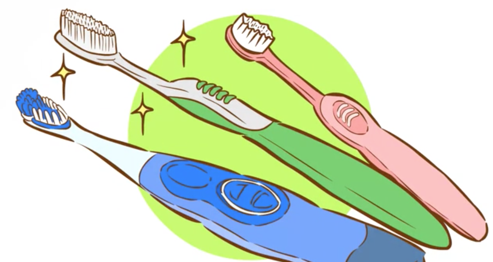
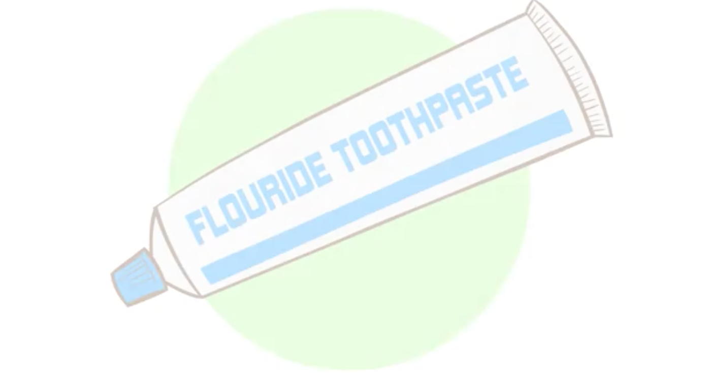
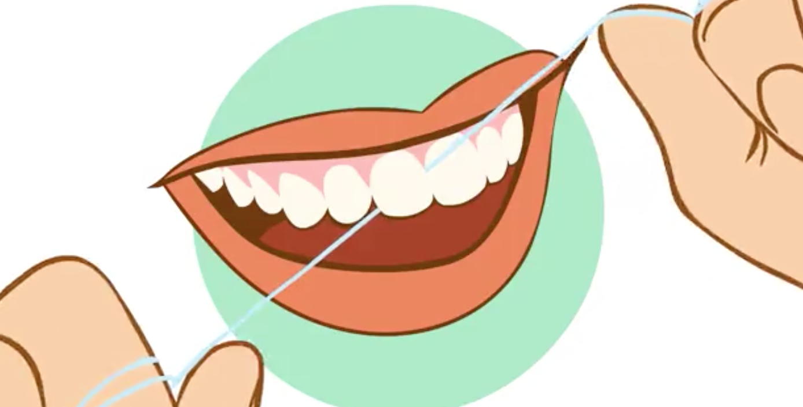

Using the right tool for Brush Your Teeth

Use a good toothbrush. Choose a toothbrush with soft nylon bristles. This must effectively remove plaque and debris from your teeth, without irritating the gums or eroding tooth enamel like hard bristled brushes can do when used with sideways action. The toothbrush should also fit comfortably in your hand, and have a head small enough to easily reach all of your teeth, especially the ones at the back. If you have difficulty fitting the toothbrush into your mouth, it is probably too big.[3]
Electric toothbrushes are a great choice if you are a lazy brusher and think that the electric toothbrush might encourage you to spend more time on your teeth. However, you can do just as good of a job with a manual toothbrush -- it's all in the technique.
You should definitely avoid toothbrushes with "natural" bristles made from animal hair as these can harbor bacteria.

Use a fluoride toothpaste. It not only helps remove plaque, it also helps strengthen tooth enamel.[5] However, it's important to note that fluoride toothpaste is not to be swallowed, as ingesting too much can have serious health consequences. It should not be used for children under the age of 3.[6]
You can get toothpastes to target a wide variety of dental and gum problems, including cavities, tartar, sensitive teeth and gums, gingivitis and stained teeth. Opt for the one that suits your best or ask your dentist or hygienist for advice.[7]

Use dental floss. Flossing your teeth is just as important as brushing, as it removes built up plaque, bacteria and food particles that get trapped between the teeth and which soft floppy toothbrush bristles can't reach even when used with up/down natural motion. You should always floss before brushing your teeth so that any food or bacteria that comes loose during flossing doesn't remain in your mouth.
Remember to floss gently. Don't "snap" the floss between the teeth as this can irritate sensitive gums. Ease it down gently, following the curve of each tooth.
If you find dental floss awkward to use or you have braces, look for dental picks instead. These are small wooden or plastic sticks which you can insert between teeth, achieving the same results as flossing if spaces are large enough.